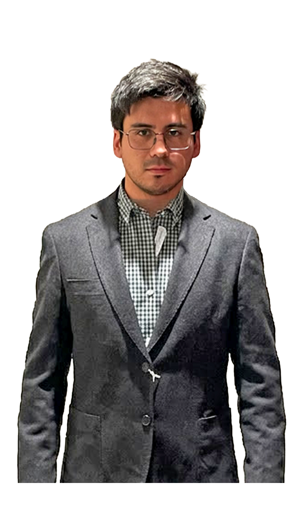

Ingeniero Civil · Profesional Asistente de Proyectos
Profesional involucrado en la evolución de proyectos de ingeniería y apoyo en la gestión de equipos técnicos, centrándose en la obtención de resultados concretos desde la fase de redacción hasta la ejecución y cierre de los proyectos.
Mantiene una actitud orientada al aprendizaje continuo, capaz de incorporar nuevos conocimientos y herramientas para aportar valor y eficacia en cada proyecto.
Snapshot profesional
Herramientas digitales
Soft skills con evidencia
Triple certificación: Deusto Formación, Universidad Internacional de Valencia y Certificado Oficial Autodesk.
↓Revit AvanzadoCurso de diseño y cálculo de estructuras con software especializado, incluyendo modelado de elementos estructurales, análisis de cargas, cimentación, armaduras y generación de proyectos en entorno 3D.
↓Estructuras con CypeCADCurso de metodología BIM aplicado a la gestión integral de proyectos, incluyendo modelado con herramientas como Allplan o Revit, planificación (4D), control de costes (5D), análisis energético (6D) y facility management (7D), con desarrollo práctico final.
↓BIM CivilBase técnica en cálculo estructural, topografía, hidráulica, geotecnia, pavimentos y gestión de proyectos de obra civil.
↓Título de Ingeniería CivilHerramientas & Software
Idiomas